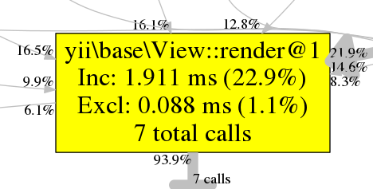

Today we'll cover:
- What is profiling and why do we need it?
- How to profile?
- How to view and analyze profiling results?
- What are common bottlenecks in our code?
- How to maintain performance?
Why profile if application works fast?
Fast?
How fast?
0.5 second — is it fast enough?
«Everything is relative»
Albert Einstein
Why optimizing?
- faster response
- more RPS
- save resources → money
Profiling
— is the process of application runtime characteristics measurement for performance analysis and optimization
Profilers are a source of knowledge on:
- where
- on which operations
- and how much
resources are spent during an application run
Ha, I don't need profiler to know where the bottleneck is.
I'll fix it right now.
Nope. Probably nope. The whole application optimization without profiling is a shooting in the dark.
What application parameters might be of interest?
- execution time
- CPU time
- memory usage
- disk operations time (IO)
- network time
- DBMS response time*
How it works?
- Profiler is a special C app, compiled as PHP extension
- Runs on demand or for every request and records metrics necessary.
- Records data in a profiling log
How to profile in PHP?
- PHP itself
- XDebug
- XHprof
- Blackfire
PHP itself
$start = microtime(true);
$this->check();
$time = microtime(true) - $start;
XDebug
Not a profiler.
Debugger with a profile function
Why not?
- huge overhead (app execution time × 2+)
- optimization for XDebug is 90% useless for when it gets disabled
- not for production server
But if you still debug with print...
Must have for debug!
Supported by:
Step-by-step debug

Stacktrace
View & modify variables in scope
XHprof
Advantages:
- minimal overhead (~10%)
- may be used on production
Disadvantages:
-
does not support PHP 7 officially.
Forks do:
- can measure execution and CPU time and memory, but usually it's enough
Easy to start!
Configure your php.ini
[xhprof] extension=xhprof.so xhprof.output_dir="/tmp/xhprof"
Enable in application entry script
<?php xhprof_enable(XHPROF_FLAGS_CPU | XHPROF_FLAGS_MEMORY); (new Application())->run(); $xhprof_data = xhprof_disable();
xhprof_disable() returns array of calls
["yii\base\Module::runAction==>yii\base\Controller::runAction"] =>
array(5) {
["ct"] => int(1)
["wt"] => int(6718)
["cpu"] => int(6720)
["mu"] => int(617624)
["pmu"] => int(672904)
}
- ct – called times
- wt – wall time, microseconds
- cpu – CPU time, microseconds
- mu – memory usage, bytes
- pmu – peak memory usage, bytes
So what's next?
Save!
<?php
xhprof_enable(XHPROF_FLAGS_CPU | XHPROF_FLAGS_MEMORY);
(new Application())->run();
$xhprof_data = xhprof_disable();
$XHPROF_LIB_ROOT = "/opt/xhprof/xhprof_lib";
include_once $XHPROF_LIB_ROOT . "/utils/xhprof_lib.php";
include_once $XHPROF_LIB_ROOT . "/utils/xhprof_runs.php";
$xhprof_runs = new XHProfRuns_Default();
$run_id = $xhprof_runs->save_run($xhprof_data, 'my_application');
These PHP files are available in XHprof repository. You can either require them or put them in the project. You can even modify them.
How to check results?
Take xhprof_lib and xhprof_html directories from the same repo, and start a web-server with root in xhprof_html.
Knowing profile IDs you can compare two of them:
http://xhprof.localhost/index.php?run1=__ID1__&run2=__ID2__


Em... Not cool.
Is there something fancy?
Ofc! Get graphviz:
apt-get install graphviz
Then click [View Full Callgraph] on the profile page and get...

Keep calm and read:

- Class and method name
- Execution time including calls from this method
- Execution time excluding calls from this method
- Method calls number

Can we get even more information?
Drawer uses PHP and it's OpenSource so you can easily add CPU, RAM usage or whatever.

Blackfire
- Started as XHprof fork, but was rewritten
- Is a product of Sensio Labs
- Small overhead
- Can be used on production servers
- Linux, FreeBSD, Windows, MacOS support
- PHP 7 support
- It's freemium. Wall time and memory usage for free. CPU, IO, network and other features starts from 19,90€
- Quite good documentation
How to install?
- Described very well in the manual
Blackfire consists of
- Website to view and analyze saved profiles
- PHP extension
- Agent to send saved profiles to the website
- Chrome extension
- CLI tools
Turns on by trigger


Profiles comparision

How had I reached 10x speedup?
Disabled xDebug
Blackfire has many interesting features:
- Manual XHprof profiles upload
- Metrics testing in PHPUnit
- Build profiling in Travis or Jenkins
- Notifications on GitHub, Gitlab, Slack, HipChat, e-mail
- Average profile of N executions
blackfire --samples 10 run php my-script.php
Now we know how to draw, but how to make the app faster?
Analyze!
What should we profile first?
- Things that are slow
- Application initialization
- Popular pages
Profile analyzing
- Follow the hot path
- Think what causes the result
- Find the right method to blame
- Fix it
- ???
- PROFIT!
Popular bottlenecks
- Bad/complex algorithms
- Nested loops
- Disk IO
- Bad SQL queries
- Communication with the Universe
- Console commands execution
How to deal with it?
Bad/complex algorithms
- Profile, analyze, optimize
- Look for a different solution
- Make async if possible
- Cache
Disk IO
- Lazy loading
- SSD
- Tune realpath cache
- Tune opcache
- Use faster storages (Memcache, Redis)
Bad SQL queries
- Analyze query EXPLAIN and optimize
- Configure indexes
- Tune your DBMS
- Avoid complex queries
Communication with the Universe
- SSL handshake takes much
- Be prepared, your endpoint will get down
- Async where possible (AMQP, RabbitMQ)
Console commands execution
- Async where possible
- Minimize
- Cache
Time for a small example
Checking the SQL query
SELECT *
FROM sale
WHERE date > '2017-04-01'::datetime
AND date < '2017-05-01'::datetime;
- No indices?
- To much data to return?
- Slow network connection to DBMS?
- Table is locked too often?
- Combination of the above?
- Everything above is wrong?
Profilers on production
- Use triggers to activate
- Remember, that profiles take disk space
Frameworks' help in application performance
- Typical problems are already solved
- Inspiration for a good code and/or performance tricks
- Debug panel

Debug panel
Application logs

SQL queries logs

Fast profiling
Yii::beginProfile('Checking my new algo');
$system->compute();
Yii::endProfile('Checking my new algo');
We should try to:
- Remember about architecture importance and clean code
- Avoid god classes and methods
- Remember about algorithms complexity
- Don't spend too much time on early optimization
And don't forget to:
- Upgrade to PHP 7.3
- Configure your caches (Opcache, Realpath cache)
- Think about what you do :)